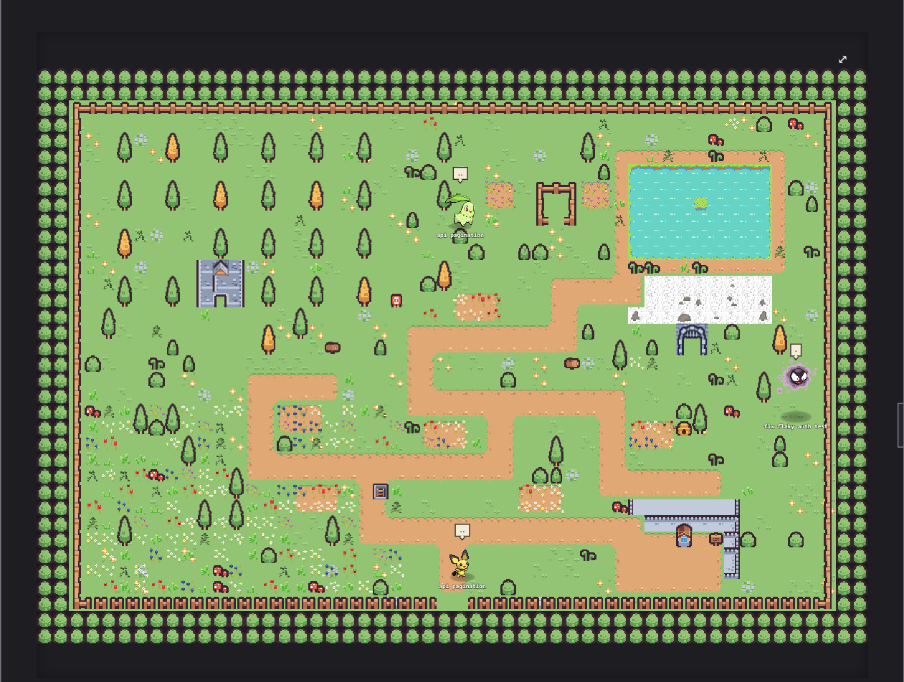
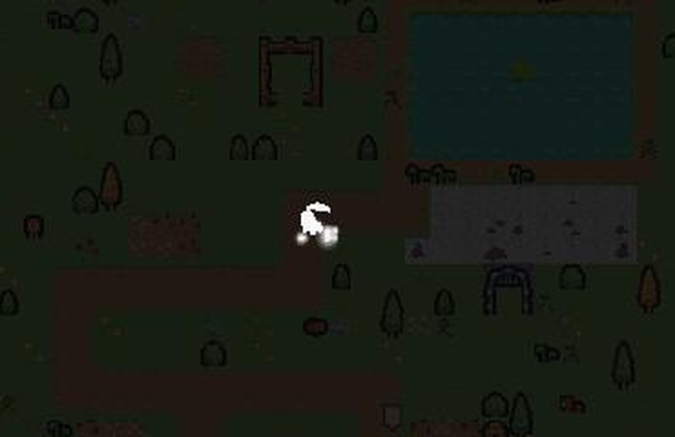
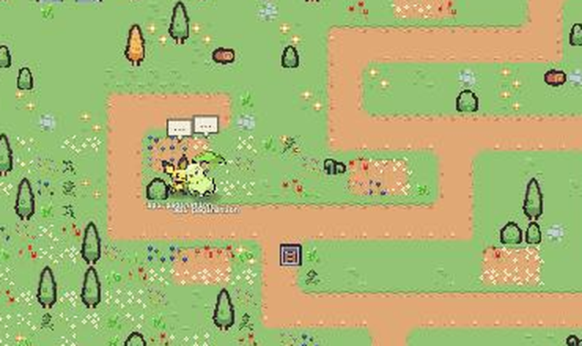
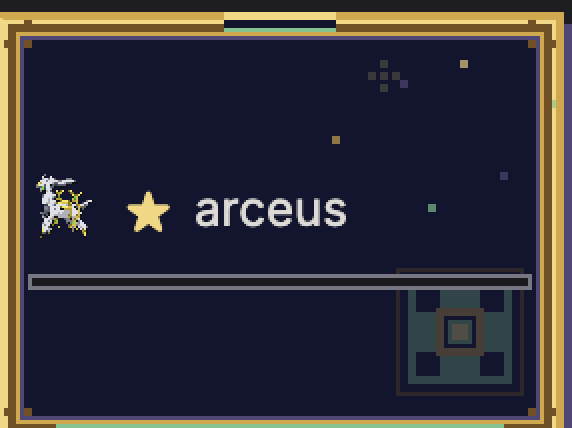

pokéharness turns every claude, codex, or cursor session running on your machine into a walker in a pixel-art garden — spawn one, watch it work, and see what it's doing without staring at a terminal.
click spawn, shiny, or battle inside it — every animation is the same engine running in the real app. nothing here is a recording.
one .zip, drag it to applications. gatekeeper will ask once — right-click, open, open. that's the whole install.
point it at a project folder and pick a pokémon, or let it pick a random starter. it launches claude, codex, or cursor-agent right there, the same as running it in a terminal.
tool calls show as a speech bubble and a walk to the right spot in the garden. subagents spawn as battles. long sessions evolve. everything you'd see scrolling past in the terminal, you now see from across the room.

every session rolls shiny once, 1-in-64, kept for life. a sparkle burst and a star badge — no different from the games.

working time adds up. cross a threshold and the walker plays a real evolution ceremony — flash, silhouette, the old/new-form blur — then comes out the other side stronger, sometimes flies.

a task tool call spawns a wild pokémon and a real battle: lunges, hit flashes, move text, up to three at once.
a handful of species mega-evolve mid-battle with a full ring, vortex, and plume ceremony, then revert when the fight ends.

summon a real claude session as arceus — a permanent, gold-framed orchestrator that can hand work to any other session in the garden.
the garden tracks your actual local clock. lamps flicker on at dusk, the pond catches moonlight, and it fades back at sunrise.